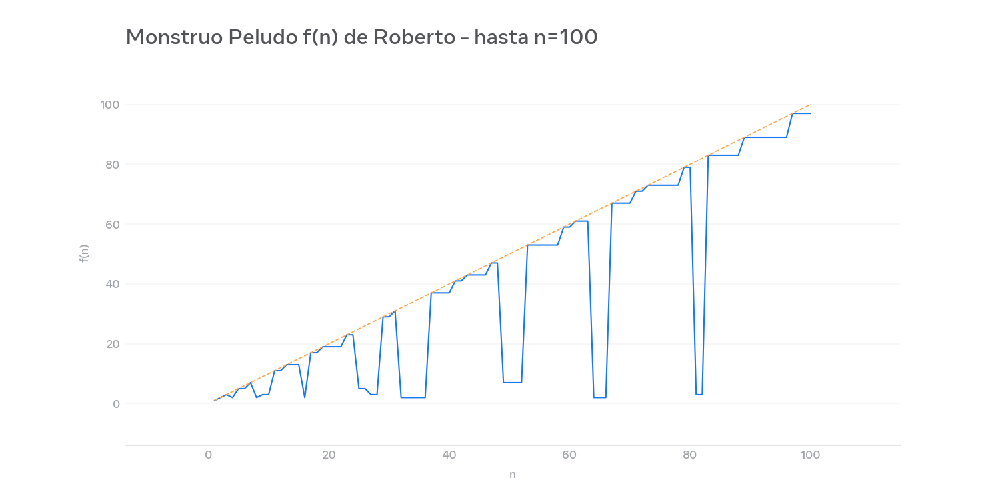
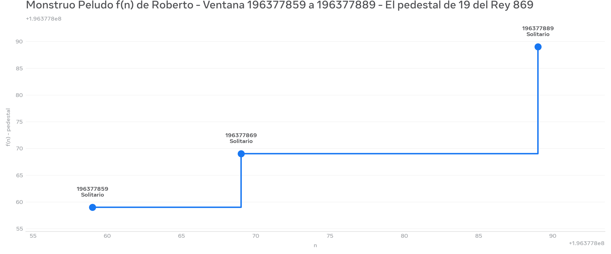
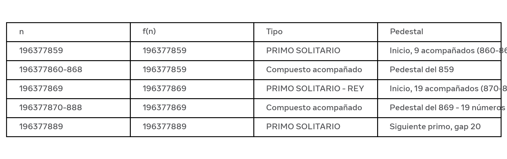

Este informe documenta el hallazgo del entero 196.377.869 como mejor diamante en el intervalo 194M-250M, bajo la métrica de Pureza de la Red desde R(n).
Primo solitario con pedestal de 19: genera meseta estable de 19 valores consecutivos de compuestos acompañados antes de caer, y deja un hueco de 20 hasta el siguiente primo relevante en 196.377.889. Es, en mi ventana, el único con esa altura.
Todo empieza en R(n) = mínimo común múltiplo de los primeros n naturales. Su crecimiento a saltos marca los primos.
R(n) = lcm(1..n) R(n+1) = R(n) * (n+1) si n+1 es primo_potencia, si no R(n)
De R(n) derivo f(n) = log(R(n)) y el monstruo peludo. Q(n) = f(n) - f(n-1) detecta pedestales.
Imagen 1: Monstruo general

Imagen 2: Zoom en 196M - El Rey

Imagen 3: Tabla pedestal 19

2^27 = 134,217,728 2^28 = 268,435,456 196,377,870 no es potencia de 2 → 196,377,869 ≠ 2^k -1 => no es Mersenne trivial Es exponente candidato para M(n)=2^n-1 con 59,113,xxx dígitos
logi(n,p) = floor(log_p(n))
pureza(n) = Σ pow(2, n, p^{logi}) / p^{logi} normalizada en [0,1]
Candidato 196,377,869 → 0.522039 > 0.5 = diamante
Propongo este n como candidato para verificación distribuida GIMPS. Si M(n) resultase primo, sería el primo de Mersenne más grande conocido con ~59M dígitos.
Gracias por leer. Empecé con R(n)=mcm(1..n) en una servilleta y terminé con un monstruo peludo de 196 millones. No sé si sirve, pero está fechado.